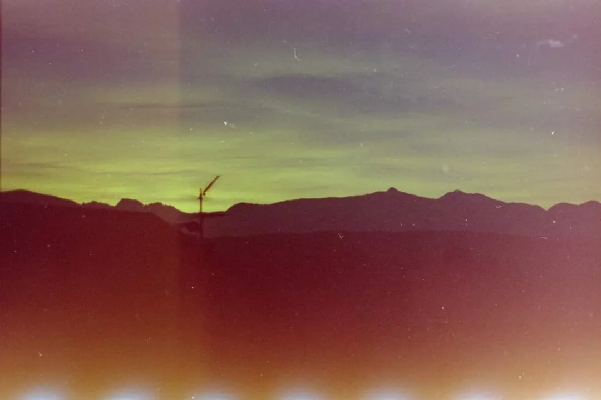

About
Bio e statement

Bio
Nel suo lavoro multidisciplinare, TuffRat intreccia pittura, fotografia e sonorità hip hop, trattando l'arte come un'estensione diretta e necessaria dell'esperienza di vita. Cresciuto all'interno del collettivo Melograno, ha iniziato il suo percorso artistico attraverso i graffiti e la cultura urbana, un background che ha definito il suo approccio istintivo e la concezione della creatività come atto condiviso.
Rifiutando la ricerca di un'estetica puramente decorativa, TuffRat agisce come catalizzatore del disagio contemporaneo. La sua pratica non mira alla perfezione formale, ma a una comunicazione limpida e oggettiva che riflette la società attuale. Nella fotografia, il suo sguardo indaga l'ambiente e la figura umana con un approccio talvolta intrusivo o casuale, mirato a catturare l'essenza cruda della vitalità piuttosto che una sua rappresentazione costruita.
Per TuffRat l'opera d'arte trascende il giudizio binario di «bello» o «brutto» per diventare testimonianza coerente dell'esistenza. La sua produzione nasce dall'urgenza di trasformare la complessità e le frustrazioni del quotidiano in forme espressive che non pongono confini tra l'atto creativo e la vita stessa.
Statement
La sua ricerca rifiuta l'estetica decorativa e punta a una comunicazione limpida, capace di riflettere la società attuale catturando l'essenza cruda della vitalità piuttosto che una sua rappresentazione costruita.
«L'arte deve essere come la vita stessa: né buona né cattiva, ma oggettiva.»
Mostre & pubblicazioni
Selezione